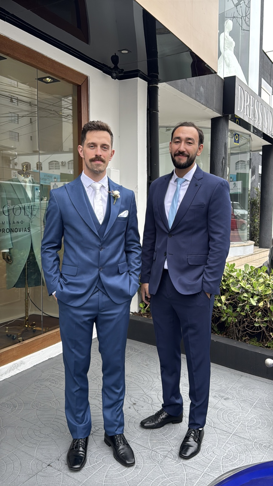

Dress Code
Conforto, estilo e personalidade.
Todas as cores estão liberadas. Nosso casamento é diferente do comum, então está liberado usar roupas confortáveis, sem se preocupar.
Mas fique livre para se vestir formalmente também. É um dia para você se sentir lindamente bem.
Só recomendamos às mulheres evitar branco, para ficar melhor nas fotos com a noiva.
Aluguel de trajes
Para quem quiser alugar traje no mesmo lugar do noivo e dos guardiões, a loja também atende mulheres que queiram alugar vestidos.
Tem preço especial para convidados do nosso casamento.
Falar com a loja